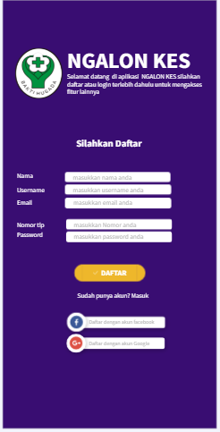
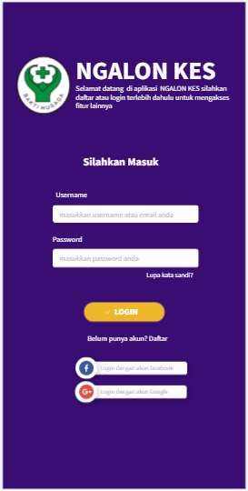
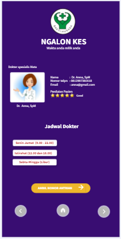
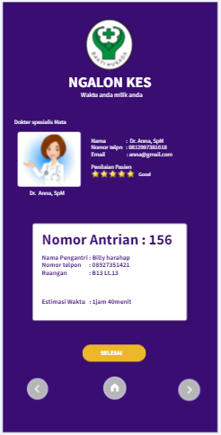
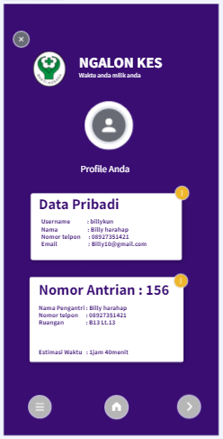

APLIKASI NGALON KES
APA ITU APLIKASI NGALON KES
sebuah aplikasi layanan kesehatan berbais online yang dapat memudahkan setiap pasien yang ingin melakukan pemeriksaan kesehatan.
Fitur Daftar
Fitur Daftar
Untuk bisa menggunakan aplikasi NGALON KES, calon pasien harus membuat akunnya terlebih dahulu pada fitur daftar dengan mengisi beberapa form yang sudah ada. Jika sudah mempunyai akun yang terhubung aplikasi NGALON KES seperti : facebook dan gmail bisa langsung digunakan.
Fitur Login
Fitur Login
Setelah mendaftarkan akun, calon pasien bisa masuk ke dalam aplikasi NGALON KES dengan cara mengisikan usernam dan password yang sudah didaftarkan tadi.
Fitur Ambil Antrian
Fitur Ambil Antrian
Pada fitur ini pasien harus mengambil nomor antrian terlebih dahulu untuk bisa melakukan pemeriksaan kesehatan.
Fitur Nomor Antrian
Fitur Nomor Antrian
Setelah mengambil nomor antrian, pasien akan mendapatkan nomor antrian beserta nomor ruangan dan durasi pemeriksaan kesehatan
Fitur Daftar Dokter

Fitur Daftar Dokter
Pada fitur ini terdapat nama-nama dokter yang tersedia pada APLIKASI NGALON KES beserta spesialisasinya
Fitur Profile
Fitur Profile
Pada fitur ini menampilkan data diri anda yang anda masukkan di APLIKASI NGALON KES dan dapat mengeditnya jika suatu waktu ada data yang berubah beserta nomor antrian yang sudah diambil sebelumnya